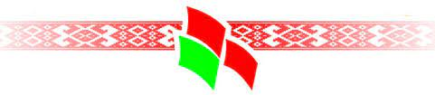

Как и когда появилось слово «Беларусь»?
Наименования «Беларусь» и «белорусы» для обозначения всей территории и населения нашей страны распространились во второй половине XIX века.
Историк Владимир ОРЛОВ утверждает: «Ученые до сих пор спорят о происхождении и смысле названия «Белая Русь». Одни связывают его с преимущественно белым цветом в народной одежде. Другие - с независимостью от монголо-татар, потому что слово «белая» означало статус свободы, независимости.
Есть версия, что название «Белая Русь» могло возникнуть в результате более раннего принятия нашими землями христианства. Кроме того, в то время соответствующий цвет мог означать определенную сторону света: белый - восток, черный - запад».